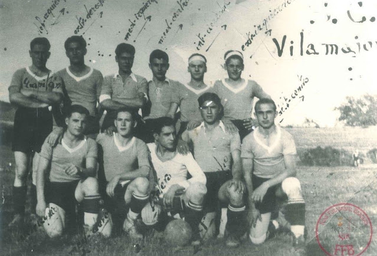
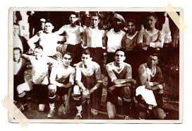
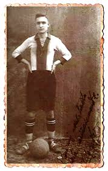
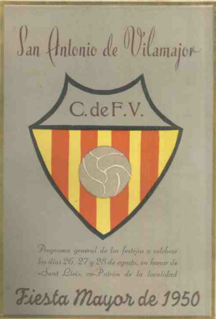

Abans del camp,
hi havia un poble.
La història del C.F. Vilamajor no comença amb una data exacta. Comença als anys vint, darrere d’una fàbrica, amb una pilota i unes portes de ferro fent de porteria.




El club situa els primers partits en un descampat que hi havia darrere la fàbrica. Encara no hi havia un camp com els d’avui: les portes de ferro de la mateixa fàbrica feien de porteries. La primera data escrita arribaria més tard. El C.F. Vilamajor es va federar el 1931, però el futbol ja havia començat a arrelar al poble.
El terreny de joc també va anar canviant. Entre 1920 i 1922 es jugava al Camp del Pla, conegut també com el camp d’en Genís de Can Moragues. Després va venir el camp de la Rovira, i del 1927 fins a l’inici de la Guerra Civil, el camp d’en Mingo del bar. Ell va cedir els terrenys a canvi de poder vendre begudes amb el seu carretó. A la mitja part, la recompensa podia ser una gasosa.
No hi havia vestidors. Els jugadors locals arribaven canviats de casa; els visitants es preparaven al bar de Can Mingo. Tampoc no hi havia entrenaments ni tàctiques gaire elaborades: un porter, dos defenses, tres mitjos i cinc davanters. La resistència venia de la feina de cada dia. La samarreta era blava, amb coll i punys blancs; pantalons i mitgetes negres amb una volta blava.
El club es sostenia amb el que podia: Josep Clopés i Joan Valentí passaven la safata entre els espectadors, i l’entitat organitzava actes de la Festa Major. Pere Llobera va construir les primeres porteries reglamentàries de fusta. Van aguantar fins al 1971, quan les van substituir les de ferro. Per anar als partits fora, els jugadors pujaven a l’autobús de Josep March, l’Avi Enric.
27 d’agost de 1934 · Festa Major de Sant Llehír.
El Vilamajor va guanyar el Girona, que havia arribat al poble de la mà de Domènech Balmanyà. La temporada 1934–35, amb una plantilla formada per jugadors del poble, l’equip també va ser subcampió del Campionat de Costa.
La Guerra Civil va interrompre aquella primera etapa. Molts homes van marxar al front i alguns no van tornar. La família d’en Mingo va haver de conrear el camp per tirar endavant; abans, però, va amagar les copes i va guardar les xarxes perquè el futbol pogués reprendre’s quan arribessin temps millors. Amb l’esforç del primer president, Antoni Valentí, la brasa del club va tornar a encendre’s després de la guerra.
La federació va posar una data als papers. El poble ja havia posat la pilota en joc molt abans.
Camp del Pla
El primer terreny amb unes condicions mínimes, entre les masies de Can Moragues.
Camp de la Rovira
El club continua jugant al poble mentre la pràctica es va fent lloc.
Camp d’en Mingo
Un camp cedit a canvi del carretó de begudes i les gasoses de la mitja part.
El club es federa
La primera data segura que queda escrita en la història del C.F. Vilamajor.
Un poble, un equip
Subcampions del Campionat de Costa amb jugadors de Vilamajor.
Porteries de ferro
Les porteries de fusta de Pere Llobera són substituïdes per les de ferro.